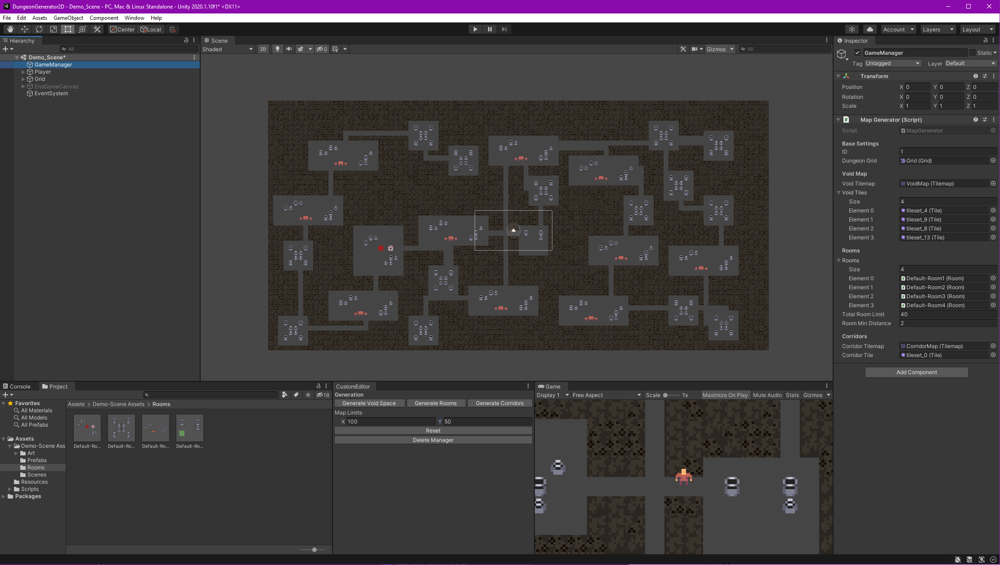
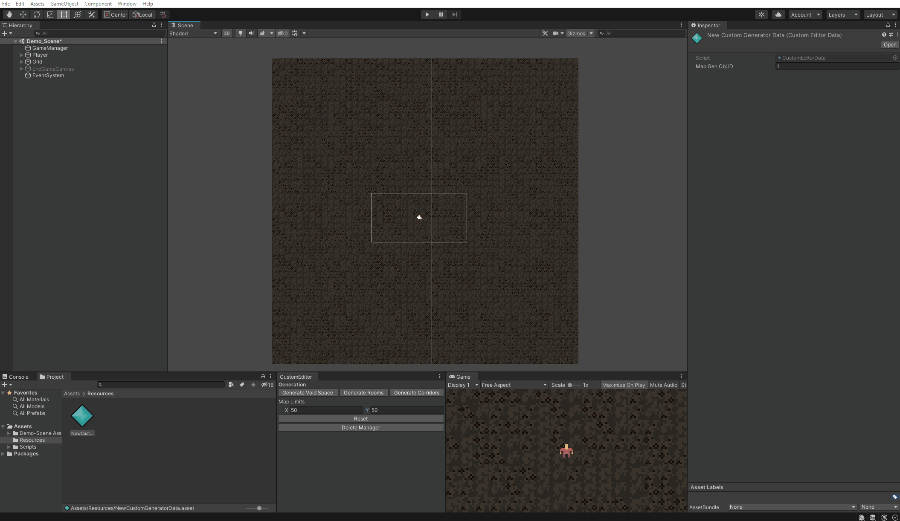

2D Procedural Dungeon
For another project at AIE, I got to work on an editor tool to help procedurally create 2D dungeon maps. I utilised Unity's editor system and tile system which although was tough to learn, really sparked my interest in creating tools to assist in game development.
Basic Features
Utlising the editor window, you can adjust the tile maps's size and click the generate buttons to physically build the map. The inspector window shows a script attached to a game manager called 'Map Generator' that allows the player to insert custom room prefabs, void tiles (to create variety in the background), as well as the tilemap to create the map on. This was designed that way to allow the player the ability to create multiple dungeon maps within one scene easily. Additionally there is a rooms script that when attached to room prefabs, allows the player to not only generate it on the map but also adjust small variables. Such as the amount of rooms of that type that can be spawned.
